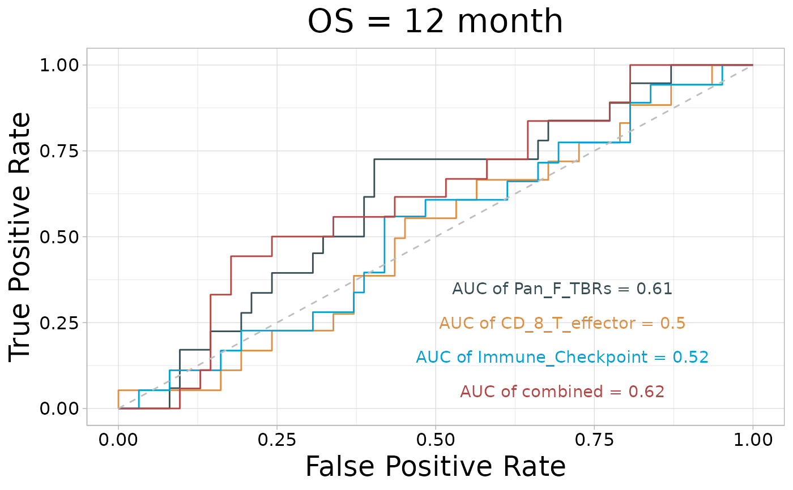

Generates a time-dependent Receiver Operating Characteristic (ROC) plot to evaluate the predictive performance of one or more variables in survival analysis. Calculates the Area Under the Curve (AUC) for each specified time point and variable, and creates a multi-line ROC plot with annotated AUC values.
Usage
roc_time(
input,
vars,
time = "time",
status = "status",
time_point = 12,
time_type = "month",
palette = "jama",
cols = "normal",
seed = 1234,
show_col = FALSE,
path = NULL,
main = "PFS",
index = 1,
fig.type = "pdf",
width = 5,
height = 5.2
)Arguments
- input
Data frame containing variables for analysis.
- vars
Character vector. Variable(s) to be evaluated.
- time
Character string. Name of the time variable. Default is `"time"`.
- status
Character string. Name of the status variable. Default is `"status"`.
- time_point
Integer or vector. Time point(s) for ROC analysis. Default is `12`.
- time_type
Character string. Time unit (`"day"` or `"month"`). Default is `"month"`.
- palette
Character string. Color palette for the plot. Default is `"jama"`.
- cols
Character vector or string. Color specification: `"normal"`, `"random"`, or custom color vector.
- seed
Integer. Random seed for reproducibility. Default is `1234`.
- show_col
Logical indicating whether to display the color palette. Default is `FALSE`.
- path
Character string or `NULL`. Path to save the plot. Default is `NULL`.
- main
Character string. Main title of the plot. Default is `"PFS"`.
- index
Integer. Index for plot filename. Default is `1`.
- fig.type
Character string. Output file type (e.g., `"pdf"`, `"png"`). Default is `"pdf"`.
- width
Numeric. Width of the plot. Default is `5`.
- height
Numeric. Height of the plot. Default is `5.2`.
Examples
# \donttest{
tcga_stad_sig <- load_data("tcga_stad_sig")
pdata_stad <- load_data("pdata_stad")
input <- merge(pdata_stad, tcga_stad_sig, by = "ID")
roc_time(
input = input, vars = c("Pan_F_TBRs", "CD_8_T_effector", "Immune_Checkpoint"),
time = "time", status = "OS_status", time_point = 12, path = NULL, main = "OS"
)
#> ℹ Time range: 0.1 to 78.37

# }